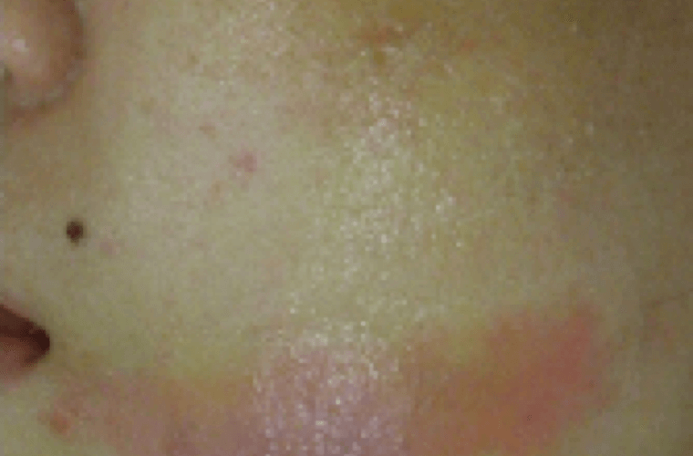

흉터 최소화 치료
#외상치료
- 정교한 봉합과 관리
- 레이저 시술
- 줄기세포 치료
외상치료
-
1
정교한 봉합
-
2
실밥제거
-
3
프락셀 레이저
(실밥 제거 후 3주째 부터
4~6회, 3주 간격) -
4
국소피판술 및
피부이식술을 통한
흉터 최소화
외상성 문신
-
1
상피층 이물질 제거 및 박피술
-

2
PRP 또는 줄기세포 치료
-
3
콜라겐 형성 드레싱 재료 재생 유도